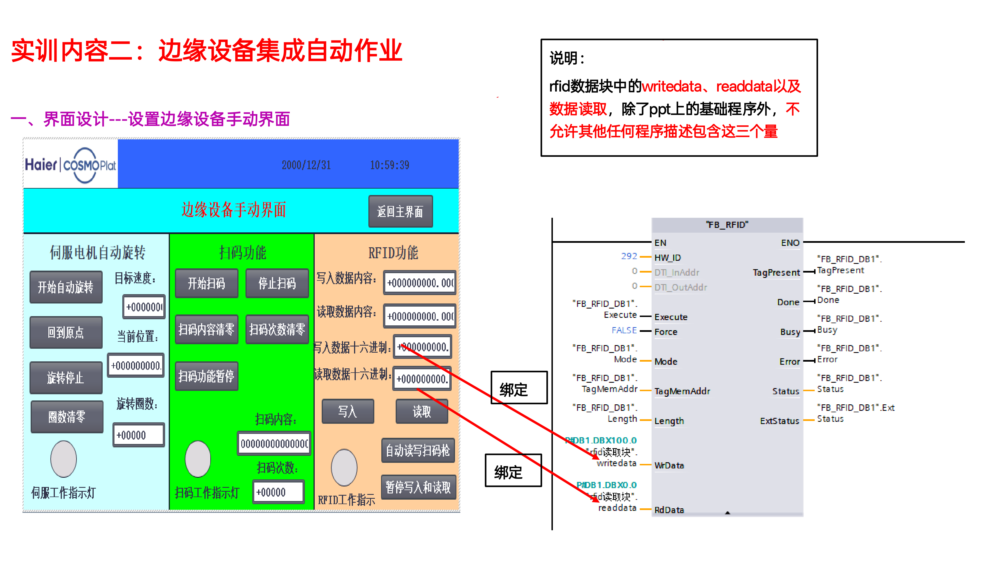
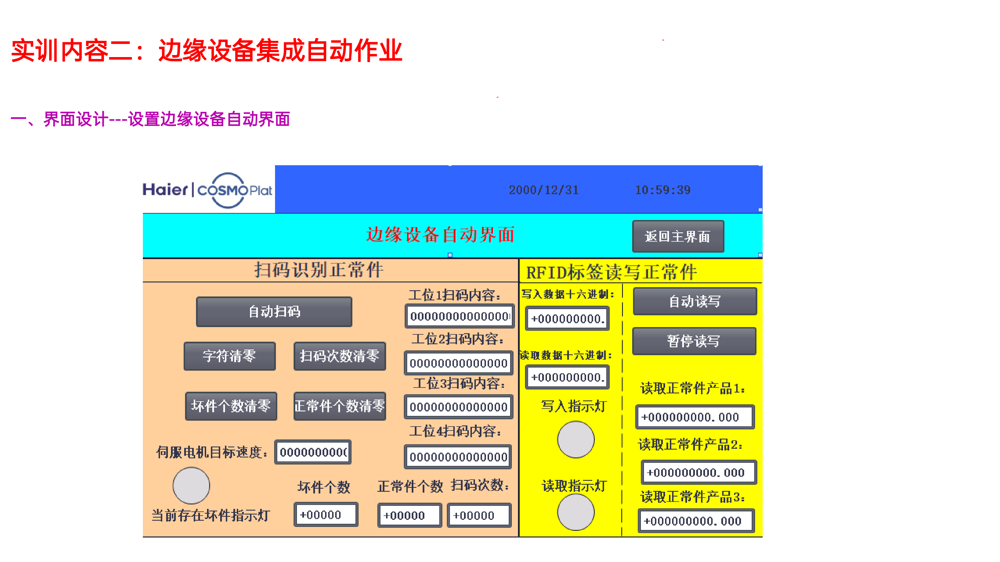
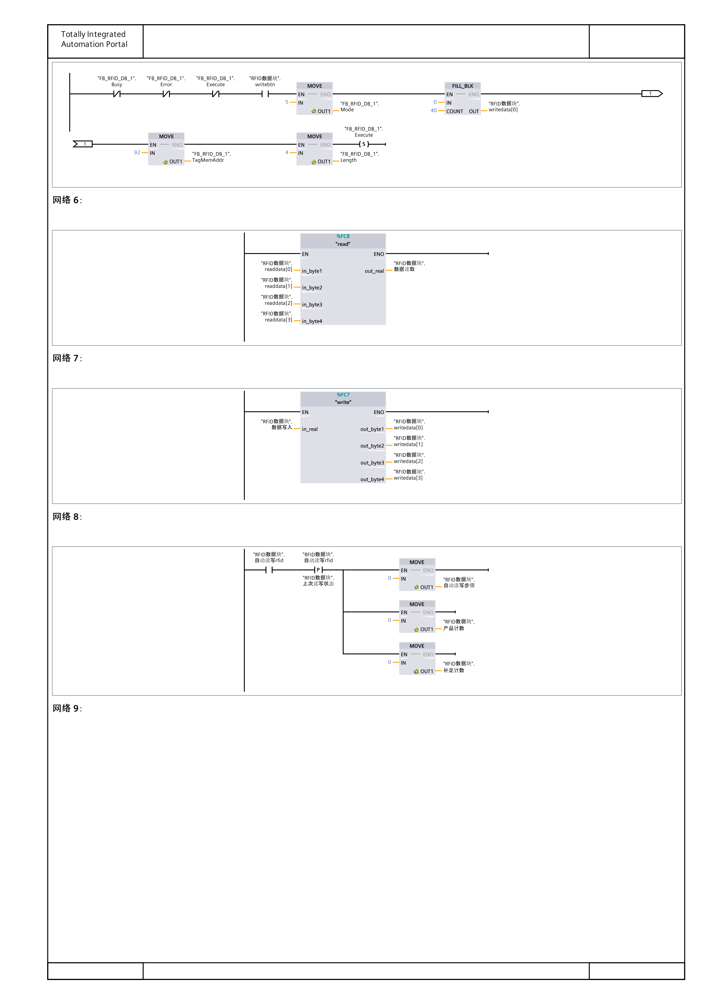
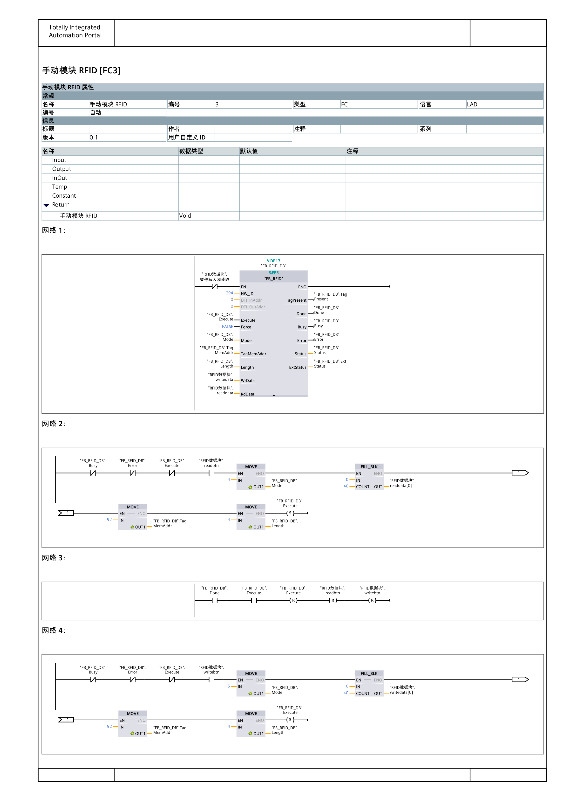
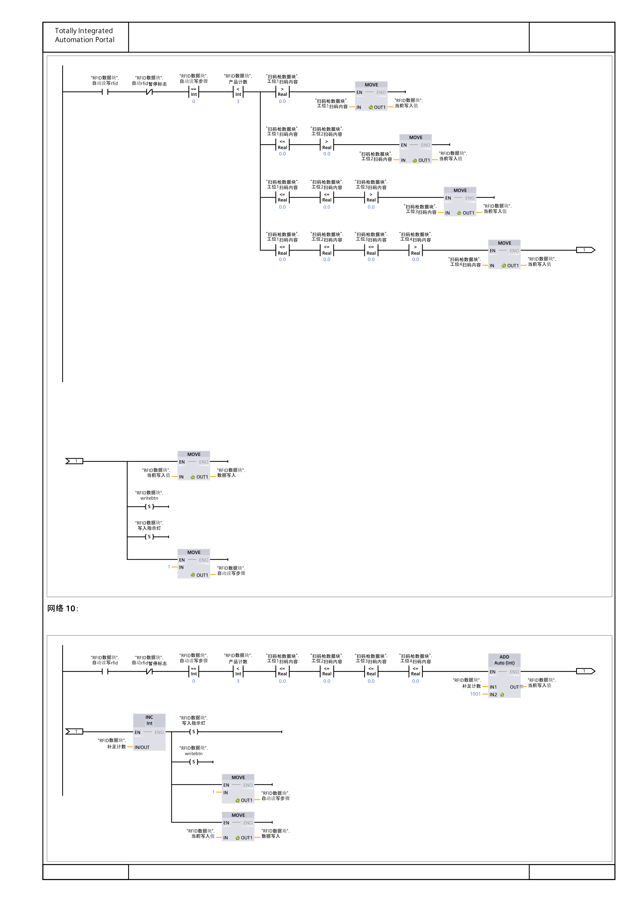
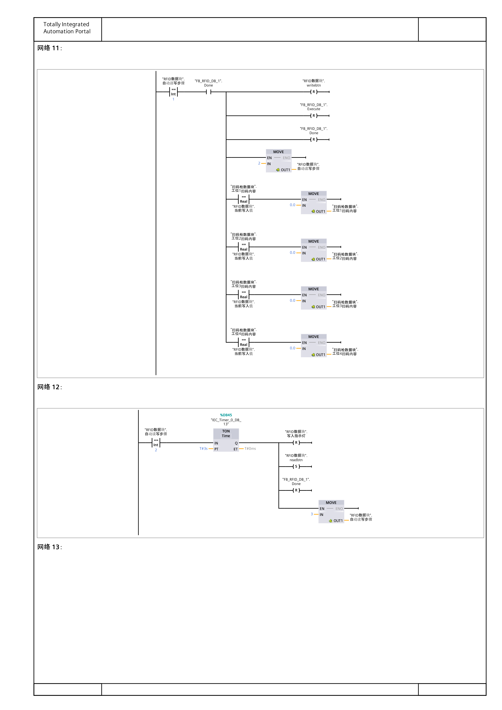
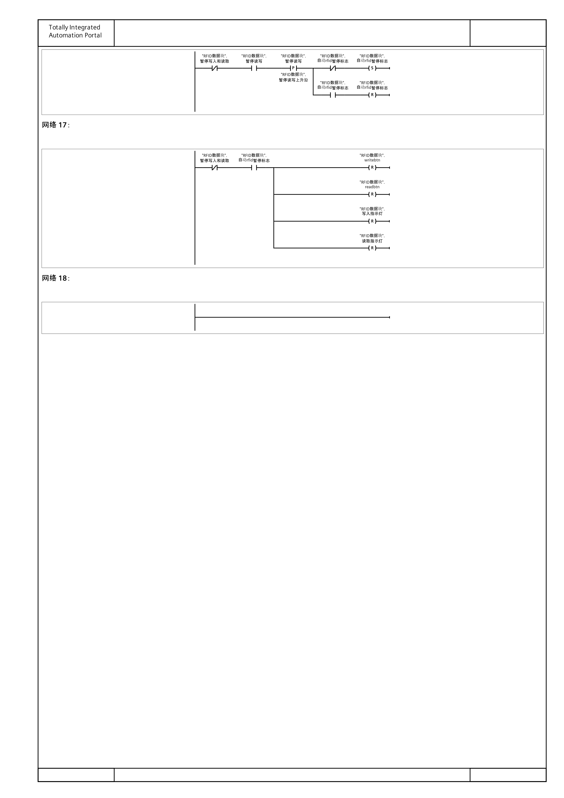
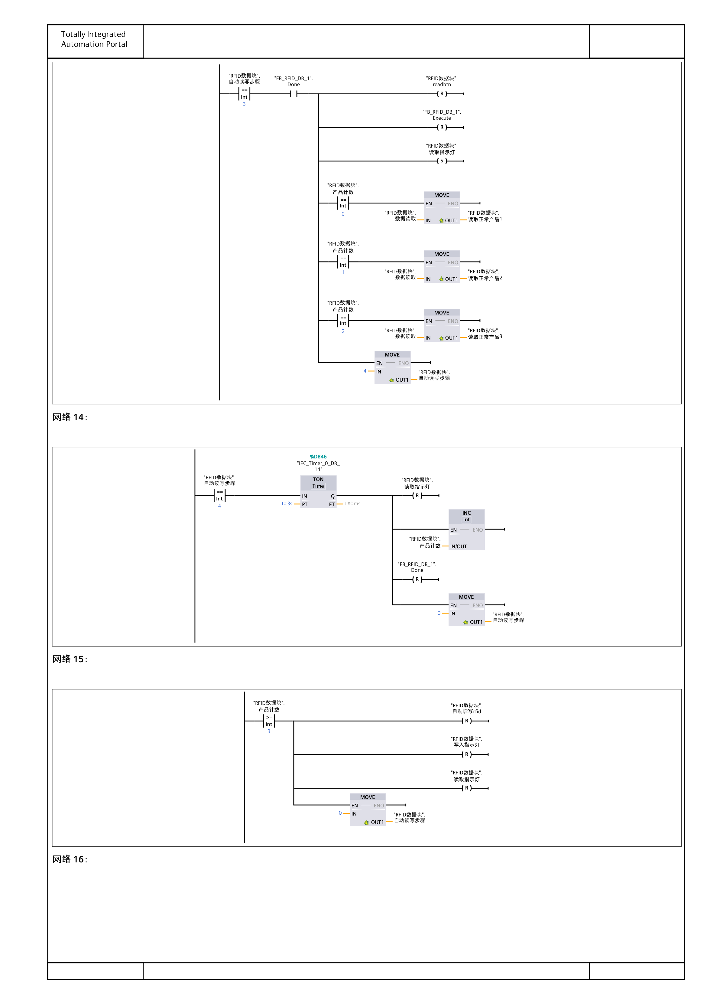

通过对任务要求PDF（项目二-任务内容）与PLC程序导出（allll6.pdf）的逐网络对比分析，FC9（自动模块RFID）及与之联动的 FC5、OB1 共发现 8个逻辑问题，其中 5 个在 FC9 本身，按严重程度分类如下：
| 序号 | 问题描述 | 修改位置 | 严重程度 |
|---|---|---|---|
| 1 | FC9违规操作 writedata / readdata / 数据读取，违反任务约束 | OB1 + FC9网络2-7 | 严重 |
| 2 | 网络9工位选择分支缺少互斥条件，多工位同时>0.0时MOVE覆盖 | FC9网络9 | 严重 |
| 3 | 网络13（步骤3→4）未复位Done标志 | FC9网络13 | 中等 |
| 4 | 暂停逻辑复位writebtn/readbtn，恢复后可能死锁 | FC9网络16-17 | 中等 |
| 5 | 网络10补足逻辑需确认计数器递增正确 | FC9网络10 | 低 |
| 6 | 未读取到正常件指示灯不闪烁（S/R线圈导致常亮） | FC5网络28 | 严重 |
| 7 | 读取指示灯置位时机错误（读取完成后才亮，非读取时亮） | FC9网络12-13 | 中等 |
| 8 | 7个监控指示灯只在自动模式工作，手动模式不更新 | OB1 + FC5 | 严重 |
FC9网络2-7直接操作writedata、readdata、数据读取，违反任务要求"除基础程序外不允许其他程序包含这三个量"
网络9的4个并联分支仅有>0.0判断，缺少<=0.0互斥条件，多工位同时有效时MOVE互相覆盖
网络13步骤3→4转换时未复位Done，虽步骤4靠TON驱动但不规范
网络17暂停时复位触发信号，步骤1或3中途暂停后恢复可能卡死
网络28用S线圈+闪烁时钟串联，闪烁时钟=0时无R指令，灯一旦亮就不灭
S读取指示灯在网络13（读取Done后）而非网络12（读取开始时），与写入灯不一致
FC5只在自动模式调用，7个监控指示灯在手动模式下不更新，任务要求"包含在手动时"


"RFID数据块中的 writedata、readdata 以及数据读取，除了PPT上的基础程序外，不允许其他程序描述包含这三个量。"
FC9网络2-7直接操作了 writedata、readdata、数据读取 三个受限变量。根因是 OB1 中 FC3 的调用条件为 手动标识符 AND NOT自动读写rfid，导致自动模式下FC3不被调用，FC9被迫复制了FC3的全部RFID基础逻辑。


FC3在手动和自动模式都执行后，FC9只需通过 writebtn / readbtn 触发FC3的逻辑，不再需要自己操作 writedata/readdata/数据读取。FC3的FB_RFID实例（DB17）会响应这些触发信号完成实际读写。
以下网络全部删除（由FC3处理）：
| 网络 | 内容 | 删除原因 |
|---|---|---|
| 网络2 | FB_RFID调用（DB47实例） | FC3网络1已有 |
| 网络3 | 读取设置（FILL_BLK readdata等） | FC3网络2已有 |
| 网络4 | Done复位（R Execute等） | FC3网络3已有 |
| 网络5 | 写入设置（FILL_BLK writedata等） | FC3网络4已有 |
| 网络6 | FC8读取转换（readdata→数据读取） | FC3中已有FC8调用 |
| 网络7 | FC7写入转换（数据写入→writedata） | FC3中已有FC7调用 |
由于Done现在来自FC3的FB_RFID实例（DB17），需要将FC9中的实例引用从DB47改为DB17：
FC3网络3的Done复位条件是 Done(NO常开)，会在Done为True的下一个扫描周期自动复位Execute和触发信号。但FC9仍需在步骤转换时显式 R Done，确保步骤转换可靠。
这是"写入时不会一个个写入"的根本原因。网络9的4个工位选择分支可能只有简单的 >0.0 并联判断，缺少 <=0.0 互斥条件。

网络11的清零逻辑是 工位扫码内容 == 当前写入值 → MOVE 0.0。由于MOVE覆盖：
| 循环 | 当前写入值 | 网络11清零结果 | 问题 |
|---|---|---|---|
| 第1次 | 工位4的值（被覆盖） | 只清零工位4 | 工位1/2/3未清零 |
| 第2次 | 工位3的值（工位4已清零） | 只清零工位3 | 工位1/2未清零 |
| 第3次 | 工位2的值 | 只清零工位2 | 工位1未清零 |
写入顺序错误（4→3→2而非1→2→3），且如果两个工位扫码内容恰好相同，会同时清零多个工位导致跳过某些工位的写入。
将网络9的4个并联分支改为优先级条件分支，每个分支增加前面工位的 <=0.0 互斥条件：
每次只选择第一个 >0.0 的工位，写入后在网络11中清零该工位扫码内容，下次循环选择下一个工位，实现真正的"一个个写入"。
网络13（步骤3→4）的执行条件是 步骤==3 AND Done，执行后未复位Done。虽然网络14（步骤4→0）会复位Done，但在步骤4期间Done保持为True可能导致其他依赖Done的逻辑误触发。

| 步骤转换 | 网络 | 是否复位Done | 状态 |
|---|---|---|---|
| 步骤1→2 | 网络11 | R Done | 已复位 |
| 步骤2→3 | 网络12 | R Done | 已复位 |
| 步骤3→4 | 网络13 | — | 缺失 |
| 步骤4→0 | 网络14 | R Done | 已复位 |
在网络13的输出指令列表中添加 R Done：
网络17在暂停时复位了 writebtn、readbtn、指示灯。如果暂停发生在步骤1（等待写入Done）或步骤3（等待读取Done），操作被中断，恢复后可能卡死。

| 变量 | 触发方式 | 控制对象 |
|---|---|---|
| 暂停写入和读取 | 急停按钮 | FB_RFID的EN使能 |
| 自动rfid暂停标志 | 用户暂停按钮（toggle） | 步骤逻辑条件 |
用户按暂停按钮只影响步骤逻辑（网络8-15），但FB_RFID仍在运行（EN未断开），可能导致FB_RFID完成操作但步骤不推进，恢复后状态不一致。
方案A：暂停时只冻结步骤推进，不中断当前操作
删除网络17的全部复位指令，改为在每个步骤转换条件中增加 NOT自动rfid暂停标志 判断：
网络16（暂停toggle）保留不变：
删除网络17（不再需要复位操作）。
暂停时当前正在执行的RFID操作正常完成（FB_RFID不受影响），步骤不推进（转换条件不满足），恢复后从当前步骤继续执行。完全满足任务要求"暂停时需保持当前步骤和产品计数"。
如果必须复位触发信号，需同时将步骤回0：
恢复后从步骤0重新开始，由于工位选择逻辑会跳过 ≤0.0 的工位（已清零），实际不会重复写入。
网络10的补足逻辑（所有工位≤0.0时写1001/1002/1003）需确认补足计数器的递增和当前写入值的计算正确。
| 次数 | 补足计数（执行前） | 计算 | 当前写入值 | 补足计数（执行后） |
|---|---|---|---|---|
| 第1次 | 0 | 0 + 1001 | 1001 | 1 |
| 第2次 | 1 | 1 + 1001 | 1002 | 2 |
| 第3次 | 2 | 2 + 1001 | 1003 | 3 |
数据写入 是FC7的输入（FC3中将 数据写入 转换为 writedata）。FC9设置 数据写入 是允许的 — 约束禁止的是直接操作 writedata/readdata/数据读取，不包括 数据写入。
这是指示灯中最严重的bug。任务要求"未读取到正常件警示灯"在3个产品均未读取到正常件时闪烁，但实际实现是常亮。

| 闪烁时钟状态 | 所有产品≤0.0? | S执行? | R执行? | 灯状态 |
|---|---|---|---|---|
| 闪烁时钟=1 | 是 | 是 → 灯=1 | 否 | ON |
| 闪烁时钟=0 | 是 | 否 | 否 | 保持ON |
| 闪烁时钟=1 | 是 | 是（但已是1） | 否 | ON |
S（置位）线圈只在条件满足时把灯设为1，但闪烁时钟=0时没有R指令把灯复位为0。S/R触发器一旦置位就保持，导致灯常亮而非闪烁。R分支只在产品>0.0时才执行，无法配合闪烁时钟产生闪烁效果。
=（赋值）指令每个扫描周期都根据条件更新输出值。当闪烁时钟=1时灯亮，闪烁时钟=0时灯灭，自然产生闪烁。R分支保留，确保产品恢复正常时灯立即熄灭。
方案B中 /闪烁时钟 是常闭触点（NC），当闪烁时钟=0时导通，执行R复位灯。
写入指示灯在写入开始时（步骤0→1）置位，但读取指示灯在读取完成后（步骤3→4，Done信号）才置位。两者逻辑不一致。
| 指示灯 | 置位(S)时机 | 复位(R)时机 | 亮灯期间 | 是否正确 |
|---|---|---|---|---|
| 写入指示灯 | 网络9/10（步骤0→1，写入开始） | 网络12（步骤2→3，写入Done后3秒） | 写入中 + 3秒 | 正确 |
| 读取指示灯 | 网络13（步骤3→4，读取Done） | 网络14（步骤4→0，读取Done后3秒） | 读取完成后3秒 | 错误 |
将 S 读取指示灯 从网络13移到网络12：
读取指示灯在步骤2（readbtn置位、读取开始）时就亮，在步骤4（读取Done后3秒）时灭。与写入指示灯逻辑完全对称。
任务要求功能故障指示灯"包含在手动时"也有效，但FC5（含网络19-28的全部7个监控指示灯）只在自动模式被调用。手动模式下FC5不执行，所有监控指示灯停止更新。
| 网络 | 指示灯名称 | 手动模式 |
|---|---|---|
| 20-21 | 自动扫码指示灯 | 不更新 |
| 22 | 伺服加工正常件指示灯 | 不更新 |
| 23 | 扫码次数预警指示灯 | 不更新 |
| 24 | 功能故障指示灯 | 不更新 |
| 25 | 自动读写指示灯 | 不更新 |
| 26 | 均为正常件指示灯 | 不更新 |
| 27-28 | 未读取到正常件指示灯 | 不更新 |
任务要求功能故障指示灯"自动扫码所涉及的所有设备暂停时（包含在手动时），该灯亮"。但FC5只在自动模式调用，手动模式下该灯不会更新，违反任务要求。
将FC5网络19-28移至新的FC10，在OB1中无条件调用（或仅受总开关按钮控制）：
修改OB1中FC5的调用条件，去掉模式判断：
如果FC5的网络1-18（扫码枪逻辑）在手动模式不该执行，需要将网络1-18和19-28拆分到不同FC。否则方案B可能导致手动模式下扫码枪逻辑也被执行。
以下是所有修复应用后的FC9完整步骤流程图：
flowchart TD
START["P 自动读写rfid
步骤=0, 产品计数=0, 补足计数=0"] --> S0
S0{"步骤0
产品计数 < 3?"}
S0 -- "有工位 > 0.0" --> S0A["选第一个正常件
MOVE → 数据写入
S writebtn, 步骤→1"]
S0 -- "全 ≤ 0.0" --> S0B["补足 1001/1002/1003
S writebtn, 步骤→1"]
S0 -- "产品计数 ≥ 3" --> END
S0A --> S1
S0B --> S1
S1["步骤1: 等待写入Done
R writebtn, R Execute, R Done
清零已写工位, 步骤→2"]
S1 --> S2
S2["步骤2: 等3秒
R写入指示灯, R Done
S readbtn, 步骤→3"]
S2 --> S3
S3["步骤3: 等待读取Done
R readbtn, R Execute, R Done
S读取指示灯, 存储产品数据, 步骤→4"]
S3 --> S4
S4["步骤4: 等3秒
R读取指示灯, INC产品计数
R Done, 步骤→0"]
S4 --> S0
END["结束
R自动读写rfid, R指示灯
步骤→0"]
style START fill:#0b5394,color:#fff
style END fill:#cc0000,color:#fff
style S0A fill:#38761d,color:#fff
style S0B fill:#e69138,color:#fff
style S1 fill:#e3f2fd,color:#0b5394
style S2 fill:#e3f2fd,color:#0b5394
style S3 fill:#e3f2fd,color:#0b5394
style S4 fill:#e3f2fd,color:#0b5394
用户按暂停按钮 → 自动rfid暂停标志 置位 → 所有步骤转换条件不满足 → 步骤冻结在当前位置 → 当前RFID操作正常完成 → 恢复后从当前步骤继续。
如果时间有限，建议按以下优先级依次修改：
| 优先级 | 修复项 | 解决问题 | 改动量 |
|---|---|---|---|
| P0 | 修复二：网络9互斥条件 | 直接解决"不会一个个写入" | 小 |
| P1 | 修复一：架构重构 | 解决约束违规 | 大 |
| P2 | 修复三：网络13补R Done | 小改动，规范化 | 极小 |
| P3 | 修复四：暂停逻辑 | 防止死锁 | 中 |
| P4 | 修复五：补足逻辑确认 | 验证逻辑正确 | 无改动 |
| P0 | 修复六：闪烁灯不闪烁 | S/R改为=赋值，解决常亮 | 极小 |
| P2 | 修复七：读取灯时机 | S读取指示灯从网络13移到12 | 小 |
| P1 | 修复八：监控灯手动失效 | FC5拆分或改调用条件 | 中 |
如果不想做大改，建议优先做修复二 + 修复六：修复二解决"不会一个个写入"（网络9加互斥条件），修复六解决"闪烁灯不闪烁"（S改=）。这两个改动量都很小但解决最严重的功能问题。修复一（架构重构）和修复八（FC5拆分）涉及较多网络调整，可后续处理。